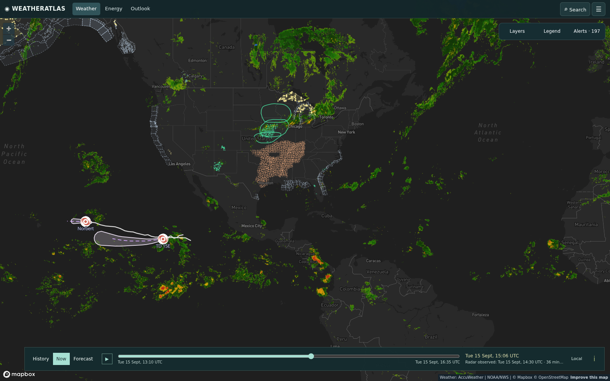

Daily severe-weather intelligence for LNG, refining, offshore, and terminal operators.

Live radar + alerts, 15 Sept 14:30 UTC — 197 active alerts on the board. TD Norbert and TD 15-E over the open eastern Pacific (no mainland energy impact); the hatched severe-weather corridor runs from the Texas Panhandle to the Great Lakes — that's today's story for refining and midstream assets. Interactive radar + hurricane tracker: accuweather.taborlin.co.
| System | Status | Energy-asset impact |
|---|---|---|
| Atlantic / Gulf / Caribbean | WATCH | Cyclone-free a 5th day (NHC), but a central-Atlantic trough has development chances east-southeast of Bermuda and the western Gulf is now on the board for possible tropical development late this week — Gulf LNG/refining and marine ops should keep the weekend open on the schedule until Thursday |
| TD Norbert (E Pacific) | WEAKENING | 29-mph tropical depression over open water — no threat to ECA LNG, Pacific tanker lanes, or Hawaii terminals |
| TD Fifteen-E (E Pacific) | OPEN WATER | 35-mph depression tracking away from mainland Mexico — Mexican Pacific refining out of the path; ECA watch only |
| Midwest flash flooding | ACTIVE | Flood watches blanket Iowa — nitrogen/fertilizer plants across the corn belt sat inside AccuWeather flash-flood flags today while NWS county watches followed hours later; rail and truck product moves face washouts |
| Gulf Coast heat + storms | TODAY | Heat Advisory for the Houston ship channel through 7 PM CDT (94–95°F peak) with a ~50% mid-afternoon thunderstorm window at refinery coordinates — free feeds read ≤5% and "clear"; plan heavy lifts before 1 PM |
| Texas Panhandle storm line | TONIGHT | Hail-capable evening storms 7–9 PM over the Panhandle refining belt — enterprise data 64–65% with a half-inch rain alarm pinned to refinery coordinates vs 26–32% free; secure coke staging and open-air units before 7 PM |
Same hour, same coordinates (Houston ship channel refinery, 2 PM CDT this afternoon), two very different answers about today's storm window — inside a live Heat Advisory:
Live Heat Advisory through 7 PM + 51% afternoon storm window vs 5% on free data — lifts before 1 PM, lightning plan for the PM shift.
Live brief →Evening storm line 7–9 PM at 64–65% with a 0.56 in rain alarm vs 26% free — plus 25 mph daytime gusts for crane and flare work.
Live brief →Quiet tropical day at the construction corridor; the late-week Gulf development window and Wed-Thu front tracked hourly.
Live brief →Asset-pinned AccuWeather + NWS alert board with lightning feed — the same data powering these briefs.
accuweather.taborlin.co →